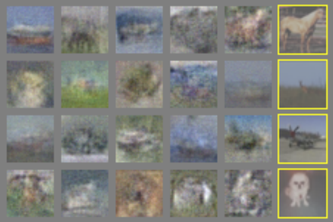
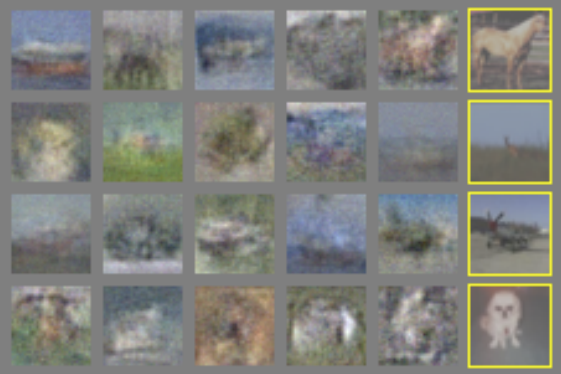

Background
Ever since their introduction in 2014 by Ian Goodfellow and colleagues,
generative adversarial networks (GANs) have been a popular subject of study
in the field of generative modeling methods. They have gained particular
popularity in the community because of the relatively heightened realism
and originality of the samples they can generate.
Despite the exciting results GANs have achieved, the training process is
often challenging, fraught with known pitfalls resulting in poor model
behavior. Some of these training failures occur by the adversarial
nature of the model's two networks, in which one model's performance comes
at the expense of the other. Other training failures arise from computational
constraints. Not only does training time need to be long enough, but
sufficiently diverse and abundant training data is required to produce
realistic results.
In this project, I worked with my supervisor Logan Eisenbeiser to study
how to train GANs capable of realistic image generation with shorter training time
and with less data by way of transfer learning.
Transfer learning is the method of continuing the training of a pretrained
network on a new dataset, a target domain.
 
